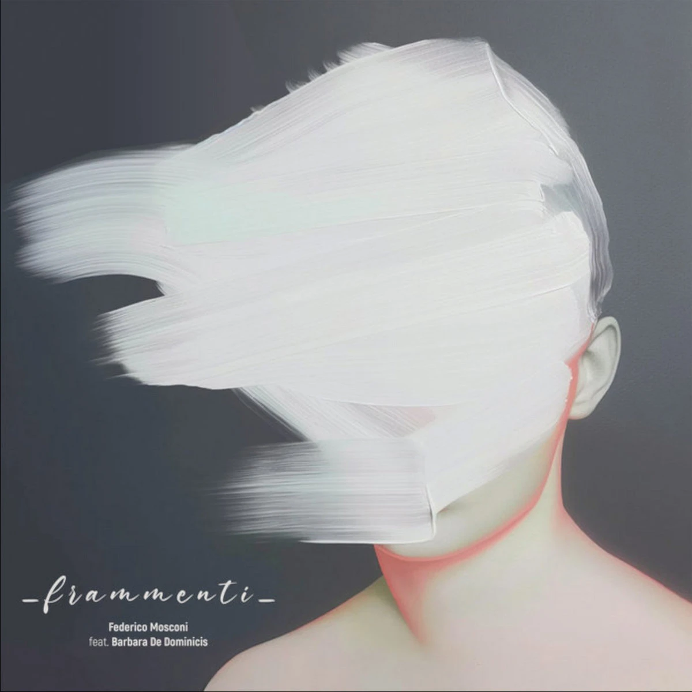

Federico Mosconi — Frammenti
I don’t remember how I first came across Federico Mosconi, but it was through his album Nocturnal. It was so good that when I went on to listen to his other releases, I almost felt a little disappointed, not because they were bad or anything, but simply because they weren’t the exact same thing.
This July, Federico teamed up with Barbara De Dominicis to release their new album Frammenti, and once again it was so good that I found myself going back to listen through all of his other records again… But Frammenti is not easy to pin down: the production leans toward ambient, but everything else is not so easy to describe. The pieces reveal their experimental yet compositional character more and more every time you listen. And then there’s Barbara’s voice, which transforms everything once again into something new. She sings, she whispers, she speaks… and every time I’m struck by how seamlessly her voice weave into the different moods of the six tracks.
My favorite piece (so far) is the last one: Frammenti VI. Fine.